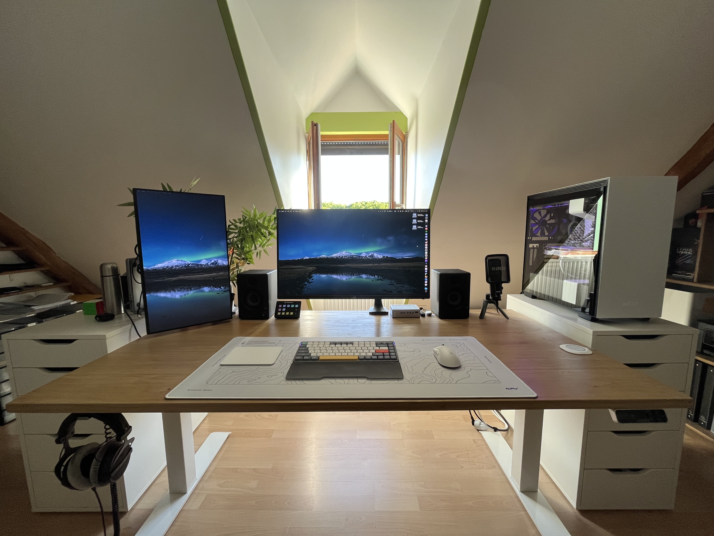
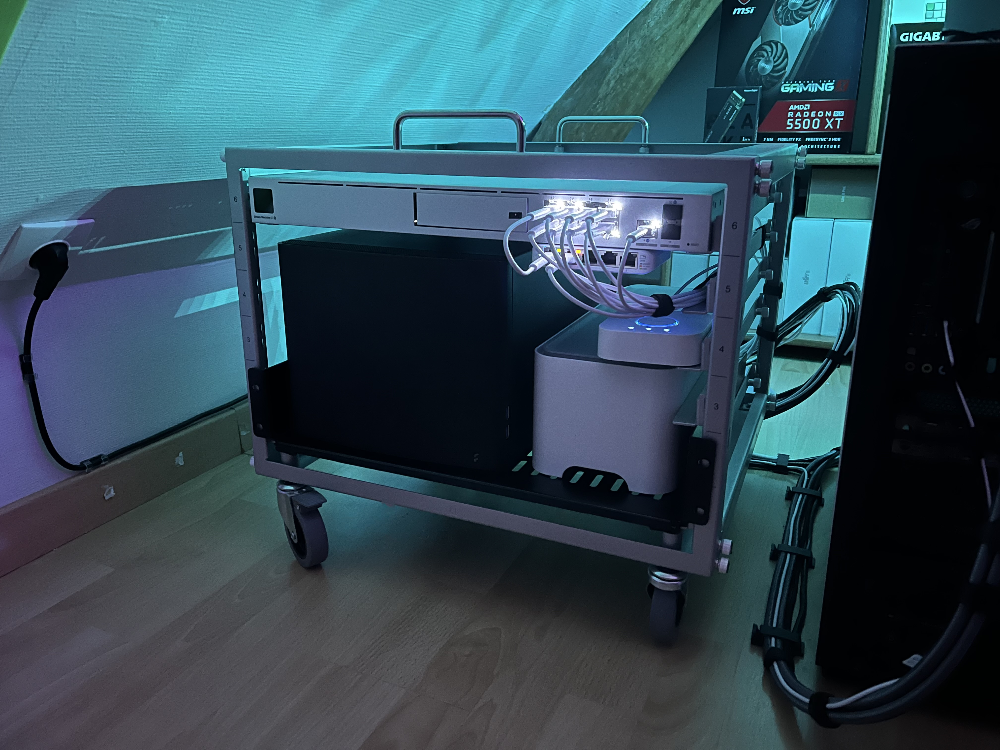
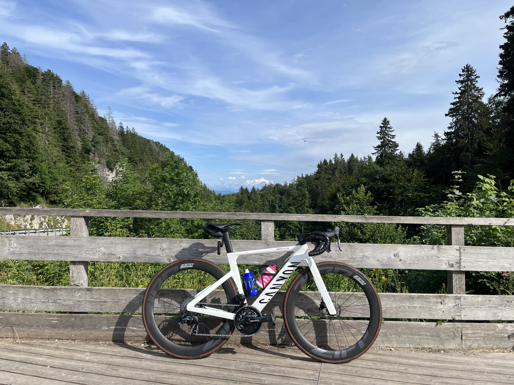
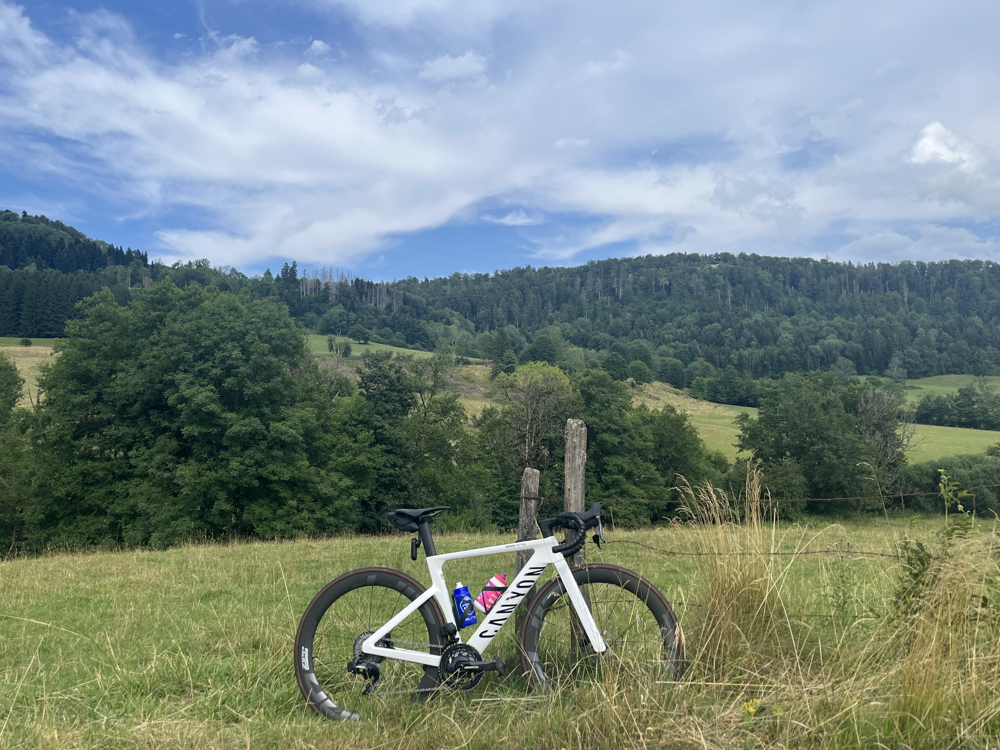
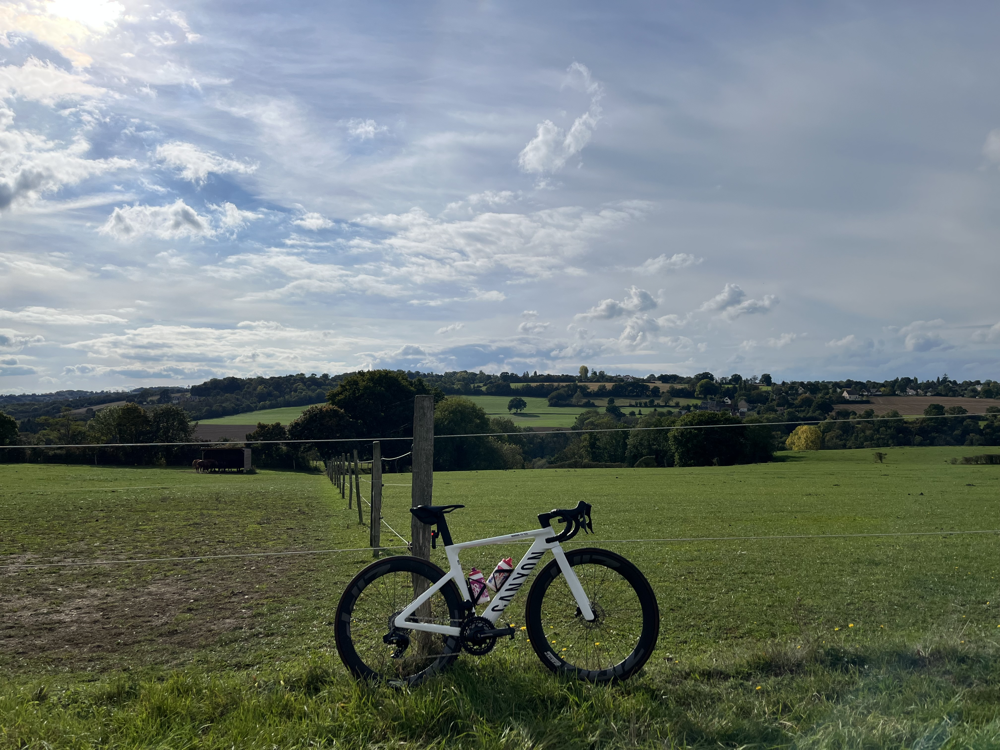
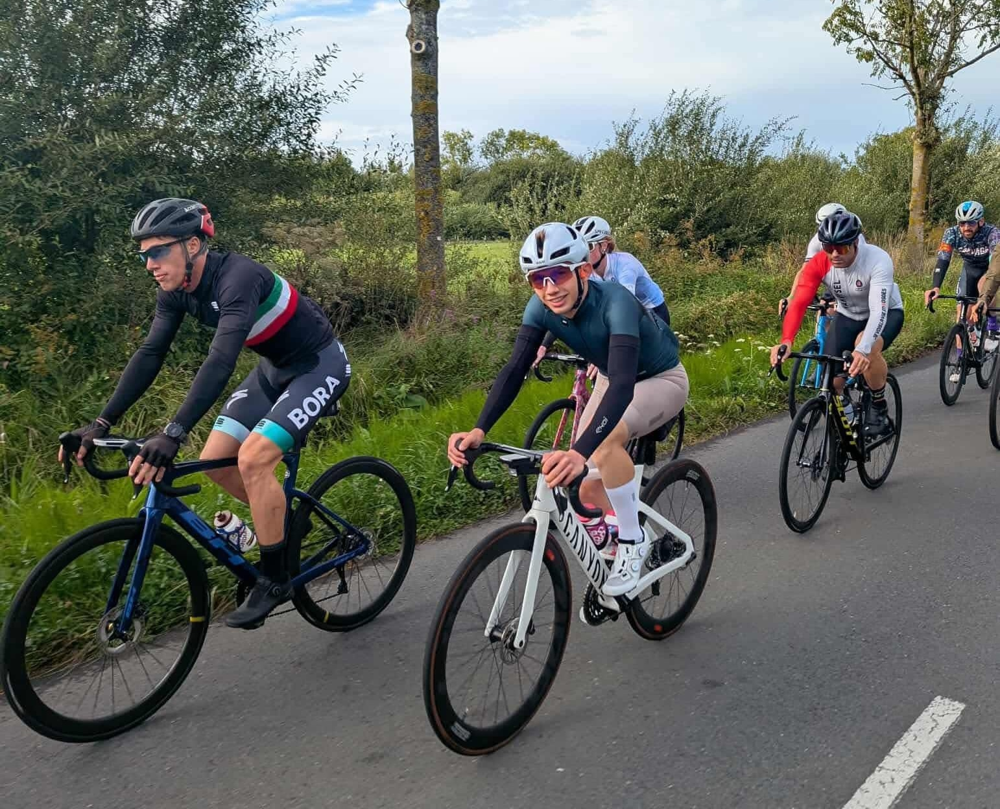

Salut ! Moi c'est Florian Vigneux, actuellement étudiant en première année de BUT Réseaux et Télcommunications. J'ai choisi cette formation car j'ai toujours aimé le domaine de l'informatique et surtout, je me suis intéréssé depuis quelques années au domaine de l'équipement et des services réseau. Enfin, j'espère pouvoir mettre à profit ces compétences dans ma future vie professionnelle.
En 2024 j'ai passé mon baccalauréat avec spécialités Mathépatiques et Physique-Chimie auquel j'ai obtenu une mention.
En ce qui concerne mon orientation, au départ, je pensais faire un BUT Informatique, mais plus je regardais les programmes, moins j’étais motivé par la programmation d’applications ou de sites web. Ce n’était pas ce que je cherchais vraiment.
En faisant des recherches, je suis tombé sur le BUT Réseaux et Télécommunications, que je ne connaissais pas du tout. Et là, ça a vraiment parlé, parce que quelques mois plus tôt, je m’étais justement intéressé aux réseaux informatiques de mon côté
Pour être sûr de mon choix, je suis allé à plusieurs journées portes ouvertes, dont une ici même. J’ai pu discuter avec des étudiants très accueillants, visiter les locaux, voir le matériel. J’ai aussi rejoint le serveur Discord de l’IUT pour poser mes dernières questions. Tout ça m’a confirmé que c’était ce que je voulais faire.
J’espère pouvoir continuer de m’épanouir et perpétuer cet équilibre entre mes différentes passions et les cours à l’IUT. J'aime découvrir, apprendre et m’améliorer c’est pour cela qu'un stage cette année puis une alternance l'année prochaine me seraient très bénéfiques afin que je puisse apporter ma contribution au sein d'une entreprise tout en apprenant sur le terrain.
Ce portfolio m'a permis de revenir en arrière sur les multiples projets effectués tout au long de mon cursus afin de suivre ma progression. Il vous permet aussi de vous rendre compte de mon implication dans les travaux de groupe.
Depuis mon plus jeune age, l'informatique m'a toujours attiré. Il fallait que j'explore chaque recoin d'une application ou encore que je personnalise entièrement mon ordinateur afin qu'il me corresponde. J'ai eu l'occasion à plusieurs reprises de mettre à profit ces compétences afin d'aider, conseiller et de mettre en place différentes solutions pour ma famille, mes amis ou encore des associations.

Je me suis orienté ces dernières années vers les technologies réseau. Cette passion s’est traduite par de nombreux projets personnels : j’ai notamment déployé un écosystème complet Ubiquiti réparti sur deux sites (chez mes parents et à mon domicile), comprenant gateways, switchs, caméras, points d’accès Wi-Fi et une interconnexion VPN pour des sauvegardes hors-site. Je dispose également d’un petit serveur fonctionnant sous Proxmox, hébergeant une VM TrueNAS ainsi que plusieurs conteneurs dédiés à la domotique, au DNS, à la supervision, etc.
Ces réalisations m’ont permis d’approfondir mes compétences en gestion de réseaux, en virtualisation et en sécurité informatique.

Quand je ne suis pas devant mon bureau, je passe mon temps libre à rouler, la plupart du temps en groupe. Cela fait plus de deux ans maintenant que je me suis pleinement mis à la pratique du cyclisme.



